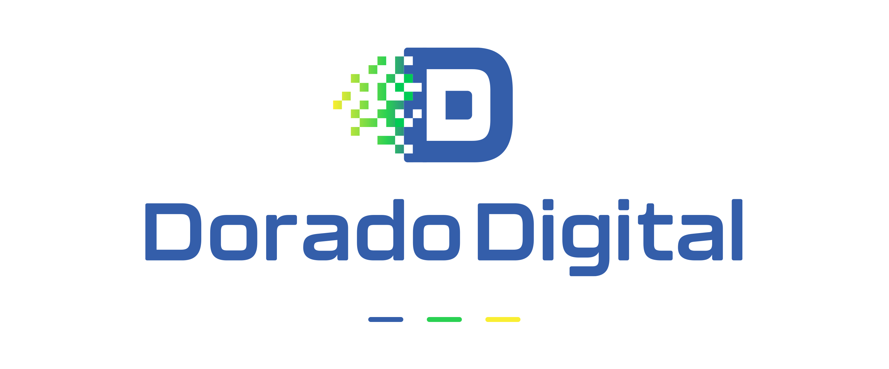
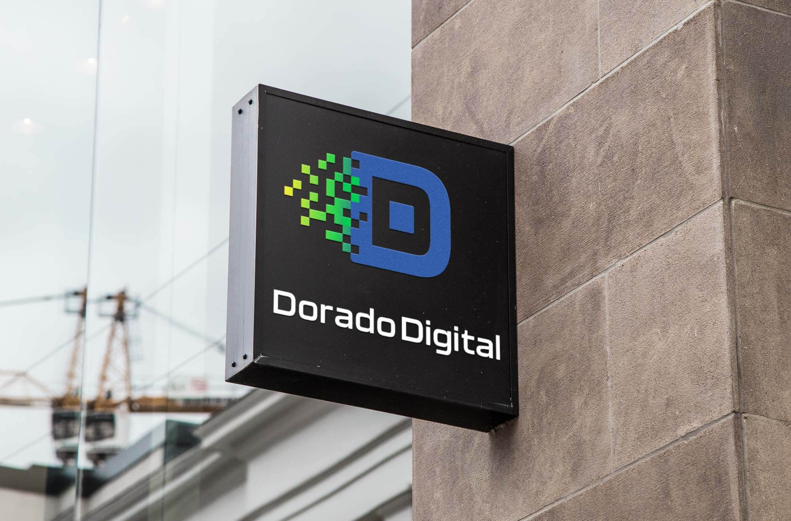
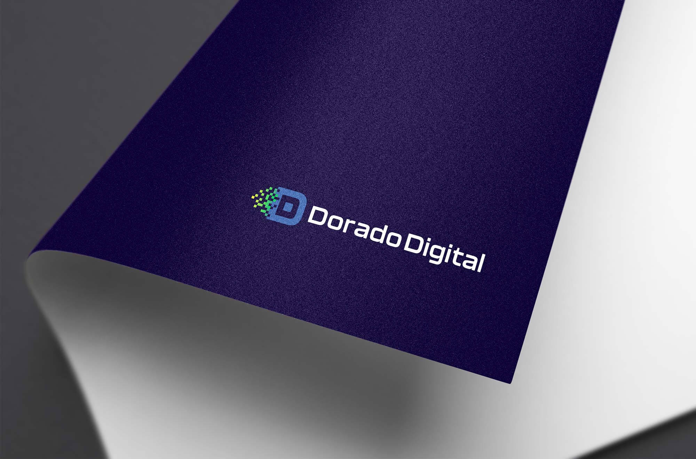

Dorado Digital Logo

Introduction
Dorado Digital is a performance marketing agency focused on measurable growth. The identity needed to feel modern and technical without losing approachability. I designed a bold double D monogram that scales across digital and print and a color system that signals innovation, reliability, and momentum.
The Challenge
Differentiate in a crowded agency market and create a mark that is memorable at small sizes, flexible in layout, and instantly tied to digital craft. The brand had to express:
- Technical credibility: Clear geometry and precise forms.
- Energy and growth: A sense of forward movement.
- Clarity: Simple, legible shapes that hold up in product UI and ads.
Design Approach
Monogram concept: The primary D encloses a smaller solid d to reinforce the name and create a compact, recognizable silhouette. The nested structure balances strength with precision.
Digital motif: Pixel squares trail from the D to cue data, performance, and transformation. The motif extends into brand backgrounds and UI dividers.
Color system: Green #29D152 for growth and momentum, Blue #345EAA for trust and depth, Yellow #F9EE32 for highlights and callouts. The palette delivers contrast for accessibility and works on light and dark.
Typography: A clean, modern sans serif with custom spacing for balance with the monogram. Letterforms echo the logo’s geometry for cohesion.
The Process
- Discovery: Competitive audit to avoid cliché agency marks and identify whitespace.
- Sketching: Rapid exploration around nested letterforms and motion cues.
- Vector refinement: Optical adjustments for stroke weight, counters, and pixel spacing to improve small-size clarity.
- Systemization: Lockups, clear space, minimum sizes, and color usage to make handoff simple for designers and vendors.
Final Outcome
- Versatile monogram and wordmark with horizontal, stacked, and icon variants.
- High-contrast palette and type choices that perform across web, decks, and signage.
- Extendable pixel motif for campaign graphics and UI accents.
The identity gives Dorado Digital a distinctive, ownable look that reinforces performance and precision while remaining approachable for clients.

